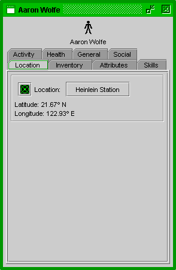
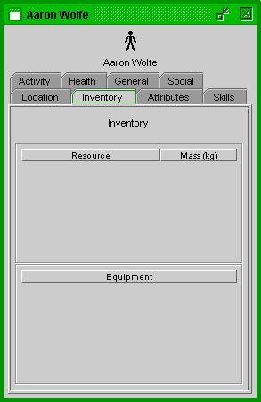
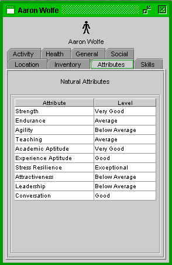
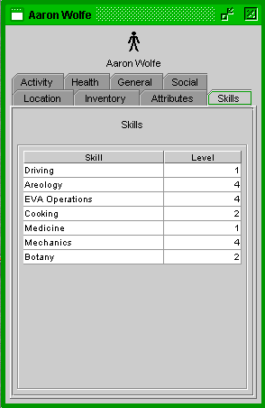
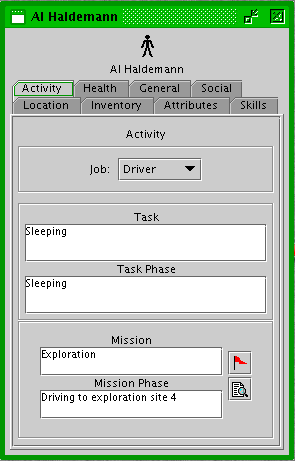
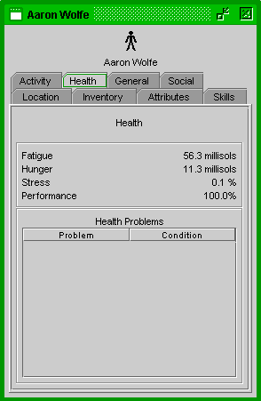
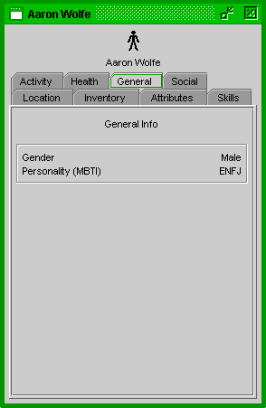
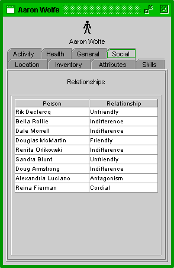

Mars Simulation Project
|
|  |
| Person Info Window - Location Tab |
The person info window displays information about an individual person. The top of the window displays the person's name and icon. A number of tab panels are available for viewing particular information.
Location - The location tab panel shows the person's current location in latitude and longitude. The green target icon button at the left will recenter the Mars Navigator map on the person's location.
If the person is located in a settlement or a rover, a button with the settlement's/rover's name is displayed. Clicking on it will open that unit's info window.
|  |
| Person Info Window - Inventory Tab |
Inventory - The inventory tab panel displays information about the resources and equipment the person is carrying.
The resources box shows the mass of particular resources the person is carrying.
The equipment box shows the number of particular equipment the person is carrying.
|  |
| Person Info Window - Attributes Tab |
Natural Attributes - The attributes tab panel shows the person's natural attributes.
Attributes are randomly determined and effect how well a person performs certain tasks.
Natural attribute definitions:
|  |
| Person Info Window - Skills Tab |
Skills - The skills tab panel displays information about the person's skills.
The main box shows a list of the person's skills and his/her skill level for each one.
Skills may effect a person's ability to perform particular tasks.
A person starts with a random set of skills (possibly none). When a person performs a task, he/she gains experience in the skill(s) associated with the task. When the experience in a skill passes a threshold, the skill level increases. The threshold for each skill doubles for each successive skill level, making it more difficult to reach higher levels.
More skills will be added later.
|  |
| Person Info Window - Activity Tab |
Activity - The activity tab panel shows information about the person's current activity.
The person's current job speciality is shown at the top. The user can change the person's job with the drop-down menu. The person will remain in that job speciality in the simulation until the user changes it again.
The person's current task is displayed below, along with the task phase.
The person's current mission (if any) is displayed at the bottom, along with the mission phase.
At the right of the mission display are the mission and monitor icons. Clicking the mission icon will open the Mission tool and select the person's current mission. Clicking the monitor icon will create a custom tab in the monitor tool displaying all the people participating in the person's current mission.
|  |
| Person Info Window - Health Tab |
Health - The health tab panel shows the person's current physical condition.
Fatigue is the number of millisols since the person has last slept. Long periods without sleep will cause the person to perform tasks poorly.
Stress is the percentage of how stressed out the person is. 0% means no stress at all and 100% means completely stressed out. Stress can affect a person's performance in activities, and can be caused by crowding, stressful activities, and accidents.
Hunger is the number of millisols since the person has last ate a meal. Hunger can affect a person's performance in activities.
Performance is the person's percentage of optimal performance. Fatigue, hunger, stress, injury and illness can affect performance.
The illness box shows a list of illnesses and injuries the person is currently suffering from. The percentage next to shows the progress to recovery.
|  |
| Person Info Window - General Tab |
General - The general tab panel shows general information about the person.
Gender is the person's gender (male or female).
Personality is the person's personality represented as Myers-Briggs Type Indicator (MBTI).
|  |
| Person Info Window - Social Tab |
Social - The social tab panel shows the person's social relationships with other people.
The relationship values (in order from worst to best) are: Hatred, Antagonism, Unfriendly, Bothersome, Indifference, Cordial, Amicable, Friendly, and Devoted.
Please send questions or comments to mars-sim-users@lists.sourceforge.net
Mars Simulation Project copyright © Scott Davis, 2008
Map data courtesy of NASA Jet Propulsion Laboratory